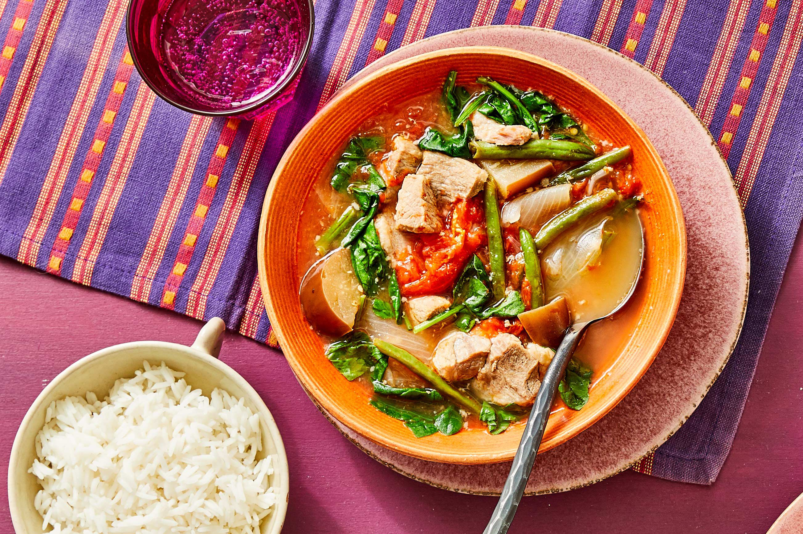

Sinigang is a sour Filipino soup consisting of sampalok (fruits of the tamarind tree), water spinach, hot peppers, cabbage, broccoli, eggplant, diced tomatoes, sliced onions, ginger, garlic, green beans, fish sauce, and salt. The basic broth usually consists of rice washing, with the addition of a souring agent.
Meal prep time : 1 hour 40 minutes
Servings : 4